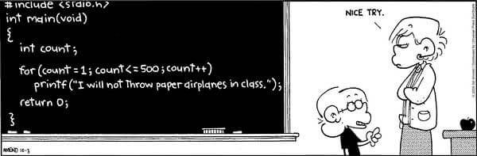

C1 Premiers pas en langage C ¶
"The only way to learn a new programming language is by writing programs in it"
(in the C programming language 1978)
Cours¶
Attention
Ce diaporama ne vous donne que quelques points de repères lors de vos révisions. Il devrait être complété par la relecture attentive de vos propres notes de cours et par une révision approfondie des exercices.
Exemples du cours¶
Travaux dirigés¶
Travaux pratiques¶
 Exercice 1 : Premières compilations¶
Exercice 1 : Premières compilations¶
-
Lancer VS Code et dans le menu
Fichier > Ouvrir le dossier(raccourci Ctrl＋K, Ctrl＋O) ouvrir un répertoire de travail pour ce premier TP (par exemple~/LangageC/TP1).Note
Une bonne habitude de Travail avec VS Code est d'ouvrir directement un répertoire de travail (celui à partir duquel les compilations seront faites).
-
Dans l'onglet extension (accessible via le raccourci clavier Ctrl＋Shift＋X), chercher "C" et installer "C/C++ IntelliSense, debugging, and code browsing.". Cette extension permet de bénéficier de la coloration syntaxique et de la détection des erreurs dans VS Code.
-
Pour chacun des trois programmes vus en cours et disponibles ci-dessus
- Le copier dans VS code et l'enregistrer (la coloration syntaxique devrait être visible)
-
Dans le terminal de VS Code le compiler avec
gccAttention
On rappelle qu'il est très fortement recommandé de toujours compiler avec les options
-Wallet-Wextraet que l'option-opermet de spécifier un nom pour l'exécutable produit lors de la compilation -
Lancer l'exécution
Aide
Il faut spécifier le chemin vers l'exécutable, ici
./
Exercice 2 : Premiers programmes¶
-
Ecrire un programme qui affiche à l'écran
"Mon tout premier programme en C" -
Ajouter dans votre programme les déclaration des variables entières
avalant 2024 etbvalant 42. -
Faire afficher à l'écran la valeur de \(2024 \times 42\).
-
Ecrire une instruction conditionnelle qui affiche dans le terminal
divisiblesi 2024 est divisible par 42 etnon divisiblesinon. -
Déclarer une variable entière
svalant 0. Ecrire une boucle qui permet de calculer la somme des entiers divisibles par 7 et par 13 de 1 à 2024.
Vérifier votre réponse :
Exercice 3 : Quelques fonctions pour démarrer¶
Note
Pour chaque question, écrire le code de la fonction puis la tester dans le main en saisissant éventuellement les arguments au clavier à l'aide de scanf.
-
Ecrire une fonction
aire_disquequi prend en argument un flottantret renvoie l'aire du disque de rayonr, on définira une constante flottantepide valeur3.14159qui sera utilisé dans le calcul. -
Ecrire une fonction
valeur_absoluequi prend en argument un flottantxet renvoie sa valeur absolue.Aide
On rappelle que :
\(|x| = \left\{ \begin{array}{rl} -x & \mathrm{\ si\ } x<0 \\ x & \mathrm{\ sinon} \end{array}\right.\) -
Ecrire une fonction
est_trianglequi prend en argument trois entiersa,betcet qui renvoietruesi ces trois entiers peuvent être les longueurs des trois côtés d'un triangle.Aide
Cela revient à vérifier que les trois entiers vérifient l'inégalité triangulaire ou encore que le plus grand des trois est inférieur à la somme des deux autres.
-
On considère le programme de calcul suivant :
- choisir un nombre entier
- ajouter 3 à ce nombre
- multiplier par le nombre choisi au départ
- soustraire 9
Ecrire une fonction
calculqui prend en entrée le nombre choisi au départ et renvoie le résultat du programme de calcul. -
On appelle factorielle d'un entier \(n\) et on note \(n!\) le produit de cet entier par tous ceux qui le précèdent à l'exception de zéro. Et on convient d'autre part que \(0!=1\). Par exemple \(5! = 5 \times 4 \times \times 3 \times 2 \times 1 = 120\). Ecrire une fonction
factoriellequi prend en argument un entiernet renvoie sa factorielle. -
Ecrire une fonction
bissextilequi prend en argument un entieranneeet renvoietruesi cette année est bissextile etfalsesinon.Aide
Une année est bissextile si elle est divisible par 4 mais pas par 100 ou s'il est divisible par 400.
-
Ecrire une fonction
maxintqui prend en argument deux entiersaetbet renvoie le maximum de ces deux entiers. -
Ecrire une fonction
xorqui prend en argument deux booléensxetyet renvoie vraie sixouyvaut vraie mais pas les deux à la fois. -
Ecrire une fonction qui prend en argument un entier et renvoie
truesi cet entier est divisible par 7 et qu'il se termine par 9.
Exercice 4 : Ecrire quelques boucles¶
- Ecrire une fonction prenant en entrée un entier
net qui affiche la table de multiplication de cet entier. - La coupe du monde de football se déroule tout les quatre ans et sa première édition date de 1930. D'autre part, à cause de la seconde guerre mondiale, la compétition n'a pas eu lieu en 1942 et en 1946. Ecrire un programme qui liste toutes les années où la coupe du monde s'est déroulée de 1930 à nos jours. Compléter ce programme de façon à afficher le numéro de l'édition pour chaque année.
- Ecrire une fonction prenant en entrée un entier \(n\) et renvoyant le plus petit entier \(k\) tel que \(2^k \geq n\).
- Ecrire un programme permettant de calculer la somme suivante :
\(\displaystyle{\sum_{k=1}^{100} k^2}\).
Exercice 5 : Un peu de dessin¶
-
Ecrire une fonction
carre_pleinprenant comme paramètre un entiercoteet un caractèrecaret permettant d'afficher un carré de côtécoterempli de caractèrescar. Par exemple,carre(5,'C')produit l'affichage suivant : -
Ecrire une fonction
rectangle_creuxprenant trois paramètres : deux entierslargeuretlongueuret un caractèrecarpermettant d'afficher un rectangle creux de dimensionslargeursurlongueurdont la bordure est constitué de caractèrescar. Par exemplerectangle_creux(3,7,'~')devrait produire l'affichage suivant : -
De la même façon écrire une fonction
triangleprenant comme paramètre un entierhauteuret un caractèrecartelle quetriangle(6,'*')produise l'affichage suivant :
Exercice 6 : Puissance¶
- En supposant
nentier et positif, écrire, une fonctionpuissance_positifqui prend en entrée un nombrexetnet renvoie \(x^n\). -
Ecrire une nouvelle fonction
puissancequi prend en argument un nombrexet un entiernet renvoie \(x^n\).Aide
Attention à bien traiter tous les cas possibles.
Exercice 7 : Nombres premiers¶
-
Ecrire une fonction
racinequi prend en entrée un entiernpositif et renvoie le plus grand entierktel quek * k <= n. Par exemple,racine(9)renvoie 3 etracine(18)renvoie 4. -
Ecrire une fonction qui prend en argument un nombre et renvoie
truelorsque ce nombre est premier etfalsesinon.Aide
On rappelle qu'un nombre est premier s'il possède exactement deux diviseurs : 1 et lui-même. On peut donc se contenter de tester si les entiers \(k\) compris entre 2 et la partie entière de \(\sqrt{n}\) inclus divisent \(n\) et utiliser la question 1.
-
Ecrire une fonction
somme_premiersqui prend en entrée un entiernet calcule la somme des nombres premiers inférieurs ou égaux àn. Par exemplesomme_premiers(10)vaut2 + 3 + 5 + 7 = 17 -
Tester votre fonction en calculant
somme_premiers(10000):
Exercice 8 : Conjecture de syracuse¶
La conjecture de syracuse est l'hypothèse selon laquelle la suite définie \((u_n)_{n \in \mathbb{N}}\) définie par son premier terme \(u_0\) et la relation de récurrence :
\(u_{n+1} = \left\{ \begin{array}{ll} \dfrac{u_n}{2} & \mathrm{\ si\ } u_n \mathrm{\ est \ paire} \\ 3u_n+1 & \mathrm{\ sinon} \\ \end{array} \right.\)
atteint 1. Dans la suite de cette exercice on supposera cette conjecture vérifiée (bien qu'elle n'ait pas été mathématiquement prouvée, la conjecture a été vérifiée numériquement pour tous les entiers jusqu'à \(2^{58}\)).
- Ecrire la fonction
terme_suivantqui prend en argument un entier \(n\) et renvoie \(\dfrac{n}{2}\) si \(n\) est paire et \(3n+1\) sinon. -
Ecrire une fonction
duree_volqui prend en argument un entier \(u_0\) et renvoie le plus petit entier \(n\) appelé durée de vol tel que \(u_n=1\). Par exempleduree_vol(7)doit renvoyer 16, en effet les termes successif de la suite sont7, 22, 11, 34, 17, 52, 26, 13, 40, 20, 10, 5, 16, 8, 4 ,2, 1.
Tester votre fonction en calculant la durée de vol de 123456789 :
Vérifier votre réponse :
-
Quelle est la plus grande durée de vol lorsque \(1 \leq u_0 \leq 10000\) ?
Vérifier votre réponse :
-
Vérifier que cette durée de vol maximale est atteinte pour une seule valeur de \(u_0\), quelle est cette valeur ?
Vérifier votre réponse :
-
L'altitude maximale est la valeur maximale atteinte par la suite de Syracuse. Ecrire une fonction prenant \(u_0\) et renvoyant l'altitude maximale atteinte. Par exemple l'altitude maximal de \(u_0 = 7\) est \(52\) (voir les termes de cette suite à la question 2.).
-
Quelle est l'altitude maximale de \(9331\) ?
Vérifier votre réponse :
Exercice 9 : Simulation d'un lancer de dé¶
Au jeu des "petits chevaux", le joueur doit lancer un dé à six faces et obtenir 6 pour "sortir un de ses chevaux de l'écurie". On se demande, en moyenne combien de coups il faut pour obtenir un 6 sur un lancer de dé.
-
Ecrire une fonction
lancer_dequi ne prend aucun argument et renvoie un nombre choisi au hasard entre 1 et 6.Aide
- La fonction
rand()du langage C renvoie un entier aléatoire, entre 0 et le plus grand entier représentable. On peut ensuite utiliser un modulo pour se ramener dans un intervalle de longueur 6. - Une méthode possible d'initialisation du générateur aléatoire de nombre est d'utiliser le temps :
srand(time(NULL));disponible après#include <time.h>
- La fonction
-
Ecrire une fonction,
obtenir6qui ne prend aucun argument et qui renvoie le nombre lancer effectué pour obtenir une première fois 6. -
Calculer la moyenne du nombre de coups nécessaire pour obtenir un six pour un grand nombre de parties (par exemple 10000). Pouvez-vous retrouver ce résultat en utilisant vos connaissances en probabilités ?
Exercice 10 : Somme des éléments d'un tableau¶
-
Ecrire une fonction
sommequi prend en argument un tableau ainsi que sa taille et renvoie la somme des éléments de ce tableau. -
Créer un tableau de
carresde taille 100 et grâce à une boucle l'initialiser de façon à ce quecarres[i]=i*i. -
Calculer la somme des carres des entiers de 1 à 100.
Exercice 11 : Appartient à un tableau¶
-
Ecrire une fonction
appartientqui prend en argument un tableautab(et sa taillet) ainsi qu'un entiernet qui renvoietruesinest dans le tableautabetfalsesinon. -
En utilisant cette fonction et le tableau
carresde la fonction précédente, vérifier que 5041 est un carré parfait mais pas 6726.
Exercice 12 : Longueur d'une chaine de caractères¶
Ecrire une fonction my_strlen qui prend en argument une chaine de caractères et renvoie sa longueur
Aide
On rapelle qu'une chaine de caractères en C se termine par le caractère nul '\0'
Exercice 13 : Manipulation des chaines de caractères¶
-
Ecrire une fonction
retournequi prend en argument une chaine de caractères et affiche cette chaine écrite à l'envers. Par exempleretourne("Bonjour")affiche"ruojnoB". -
Ecrire une fonction
palindromequi prend en argument une chaine de caractères et renvoietruesi cette chaine est un palindrome (c'est-à-dire qu'elle se lit indifféremment de gauche à droite ou de droite à gauche) etfalsesinon. Par exemplepalindrome("radar")renvoietrue.
Exercice 14 : Nombre parfait¶
Un nombre parfait est un entier positif égal à la la somme de ses diviseurs stricts (c'est-à-dire autres que lui-même). Par exemple, 6 est un nombre parfait car \(6 = 3 + 2 + 1\).
- Écrire une fonction
parfaitqui renvoietruesi l'entier positif donné en argument est parfait etfalsesinon. - Utiliser cette fonction pour vérifier que \(8128\) est un nombre parfait mais pas \(2023\).
Exercice 15 : Triangle de Pascal¶
Ecrire un programme qui prend en argument un entier \(1 \leq n \leq 10\) et affiche les \(n\) premières lignes du triangle de Pascal. Par exemple pascal(4) affiche :
Aide
- On rappelle que le coefficient situé ligne \(n\) et colonne \(k\) noté \(\displaystyle{\binom{n}{k}}\) se déduit de ceux de la ligne précédente grâce à la formule de Pascal : \(\displaystyle{\binom{n}{k} = \binom{n-1}{k-1} + \binom{n-1}{k}}\)
- On pourra utiliser deux tableaux, l'un représentant la ligne précédente et un second la ligne en cours de construction.
Exercice 16 : Tableau trié¶
Ecrire une fonction est_trie qui prend en argument un tableau d'entiers (et sa taille) et renvoie true si ce tableau est trié (dans l'ordre croissant ou décroissant) et false sinon.
Aide
On pourra dans un premier temps s'aider de deux fonctions est_trie_croissant et est_trie_decroissant.
Exercice 17 : Nombre d'occurences¶
-
Ecrire une fonction
nb_occurrencesqui prend en argument un tableau d'entierstab(et sa taille) ainsi qu'un entiernet renvoie le nombre d'apparitions dendans le tableautab. Par exemple sitabest le tableau{2, 18, 7, 2, 11, 7, 4, 7, -1, 3}(de taille10) alorsnb_occurrences(tab,10,7)renvoie 3 etnb_occurrences(tab,10,13)renvoie 0. -
Ecrire une fonction similaire
compte_caracterequi prend en argument une chaine de caractèreschaineet un caractèrecaret compte le nombre d'apparitions decardanschaine. A-t-on besoin cette fois de passer en argument la taille de la chaine ? Pourquoi ?
Exercice 18 : Tri par insertion¶
L'algorithme du tri par insertion permet de trier en place un tableau de taille \(n\). Le principe est de considérer qu'à l'étape \(i\), la partie du tableau située avant l'indice \(i\) est déjà triée et on insère l'élément situé à la position d'indice \(i\) à la bonne position dans cette partie. Pour réaliser cette insertion, on échange l'élément d'indice \(i\) avec son voisin de gauche tant qu'il lui est supérieur et que le début de liste n'est pas atteint.
Par exemple sur la tableau \(\{12, 10, 18, 11, 14\}\) et en délimitant la partie triée par le symbole \(\color{red}{|}\):
- Etape 0 : la partie situé avant l'indice 0 est vide (donc déjà triée), on y insère le 12 : \(\require{color} \{\color{green}{12}, \textcolor{red}{|} 10, 18, 11, 14\}\)
- Etape 1 : on insère l'élément d'indice 1 dans la partie trié, pour cela on l'échange avec son voisin tant qu'il lui est inférieur (et que le début de la liste n'est pas atteint) :
- \(\{12, \textcolor{green}{10} \textcolor{red}{|} , 18, 11, 14\}\) échange car \(10<12\)
- \(\{\textcolor{green}{10}, 12 \textcolor{red}{|} , 18, 11, 14\}\) on s'arrête car le début de liste est atteint
- Etape 2 : on répète le processus avec l'élément d'indice 2 :
- \(\{10, 12 , \textcolor{green}{18} \textcolor{red}{|}, 11, 14\}\) aucun échange à réaliser car \(12<18\)
- Etape 3 : on répète le processus avec l'élément d'indice 3 :
- \(\{10, 12 , 18, \textcolor{green}{11}\textcolor{red}{|}, 14\}\) échange car \(11<18\)
- \(\{10, 12 , \textcolor{green}{11}, 18 \textcolor{red}{|}, 14\}\) échange car \(11<12\)
- \(\{10, \textcolor{green}{11}, 12 , 18 \textcolor{red}{|}, 14\}\) arrêt car \(11>10\)
- Etape 4 : on répète le processus avec l'élément d'indice 4 :
- \(\{10, 11, 12 , 18 , \textcolor{green}{14}\textcolor{red}{|}\}\) echange car \(14<18\)
- \(\{10, 11, 12 , \textcolor{green}{14}, 18 \textcolor{red}{|}\}\) arrêt car \(14>12\)
Le but de l'exercice est de programmer cet algorithme de tri en C.
-
Ecrire une fonction
echangequi prend en argument un tableautab, deux entiersietjet qui échange les éléments d'indiceietjde ce tableau. On pourra dans un second temps passer aussi en argument la taille du tableau et vérifier queietjsont bien inférieurs à cette taille avant de procéder à l'échange. -
Ecrire une fonction
inserequi prend en argument un tableautabet un indiceiet qui insère l'élément d'indiceià la bonne place dans la partie du tableau situé avant l'indiceien suposant que cette partie est triée. On rappelle que cette insertion s'effectue en echangeant l'élément avec son voisin de gauche tant qu'il lui est inférieur et que le début du tableau n'est pas atteint.
Par exemple sitab={5,7,11,6,19,7}alors aprèsinsere(tab,3)tab{5,6,7,11,19,7}. -
Ecrire une fonction
tri_insertionqui prend en argument un tableau et sa taille et le trie à l'aide de l'algorithme du tri par insertion.
Exercice 19 : Crible d'Erastothène¶
On rappelle qu'un nombre premier est un entier naturel ayant exactement deux diviseurs 1 et lui-même, ainsi 13 est premier mais pas 15. Le crible d'Erastothène est un algorithme permettant de trouver tous les nombres premiers inférieurs ou égaux à un entier n donné.
Algorithme
- on crée un tableau de booléens
premiersde taillen+1 - on initialise le tableau à
truesaufpremiers[0]etpremiers[1]qui sont àfalsepuisque \(0\) et 1 ne sont pas premiers. - on parcourt ce tableau si
premiers[i]est àtruealors on met tous ses multiples (sauf lui-même) àfalse - le parcours s'arrête dès que l'entier
iest supérieur à \(\sqrt{n}\).
-
Ecrire en C une fonction
criblequi prend en paramètre un entiernet implémente cet algorithme. L'utiliser pour afficher les nombres premiers inférieurs à 100.Aide
Vous devriez obtenir :
2 3 5 7 11 13 17 19 23 29 31 37 41 43 47 53 59 61 67 71 73 79 83 89 97 -
Ecrire en C une fonction
somme_premiersqui prend en argument un entierseuilet renvoie la somme de tous les nombres premiers inférieurs ou égaux àseuil. Par exemplesomme_premiers(100)renvoie1060
Pour aller plus loin
Les élèves ayant fait la spécialité nsi ou connaissant un minimum le langage Python peuvent coder ce même algorithme en Python et comparer les temps de calcul dans les deux langages sur par exemple somme_premiers(5000000).
Humour d'informaticien¶
